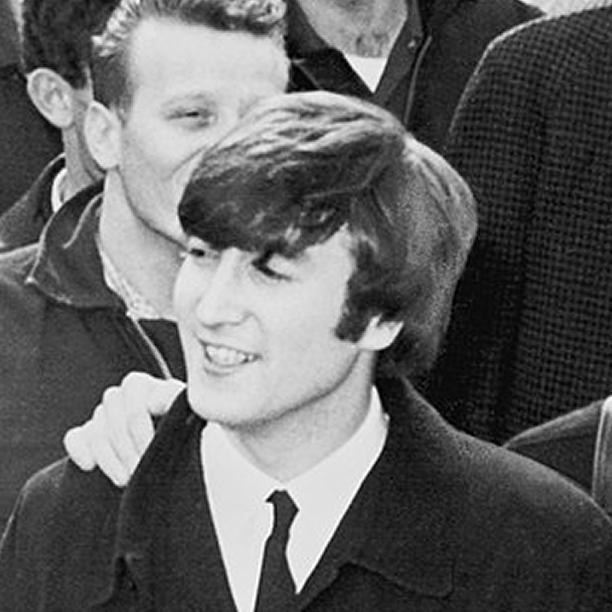
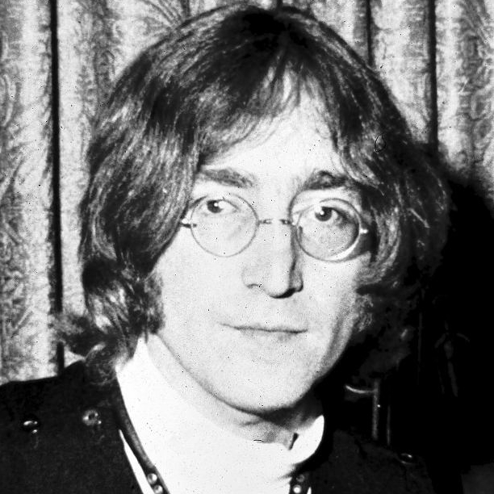

1. John Winston Ono Lennon, nato John Winston Lennon (Liverpool, 9 ottobre 1940 – New York, 8 dicembre 1980), è stato un cantautore, polistrumentista, artista e attivista britannico.
2. Dal 1960 al 1970 fu compositore e cantante del gruppo musicale dei Beatles, nei quali in coppia con Paul McCartney, compose anche la maggior parte delle canzoni. Con McCartney formò una delle più importanti partnership musicali di successo della storia della musica del ventesimo secolo.

3. Terminata l'esperienza con i Beatles, John Lennon fu anche musicista solista, autore di disegni e testi poetici, nonché attivista politico e paladino del pacifismo.
4. Fu assassinato a colpi di rivoltella da un suo stesso fan, Mark David Chapman, la sera dell'8 dicembre 1980 a New York.